1Halo! Apa yang kita pelajari?
Pernah bikin tugas yang isinya bukan cuma tulisan? Ada tabel dari Excel, grafik, foto, bahkan peta? Hari ini kita belajar menggabungkan semuanya menjadi laporan dan presentasi yang rapi, benar, dan keren — lewat proyek bareng kelompok.
- Menjelaskan fungsi pengolah kata, lembar kerja, dan pengolah presentasi.
- Memindahkan konten antar aplikasi dengan salin–tempel, tangkapan layar, dan menu Sisipkan.
- Menyusun laporan 2 halaman dan 3 slide presentasi.
- Menjaga etika: sumber dan hak cipta.
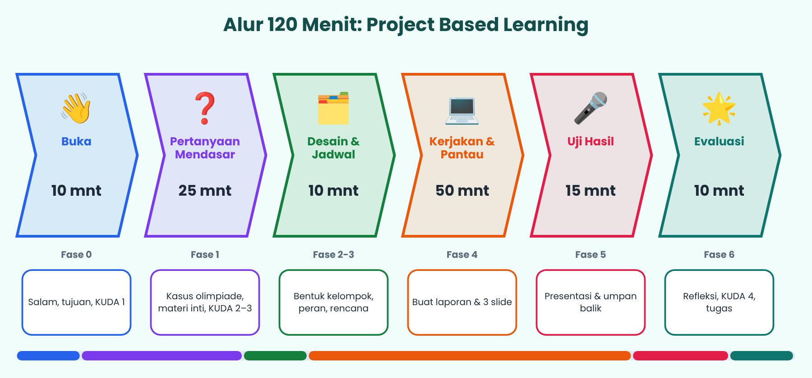
2Tantangan: Olimpiade Berpikir Komputasi
Kamu pengurus OSIS. Olimpiade online sudah selesai: tiap kelas VIII (10 kelas) mengirim 2 wakil terbaik, dan juri memberikan hasil dalam file lembar kerja. Kepala Sekolah meminta laporan maksimal 2 halaman dan presentasi 3 slide.
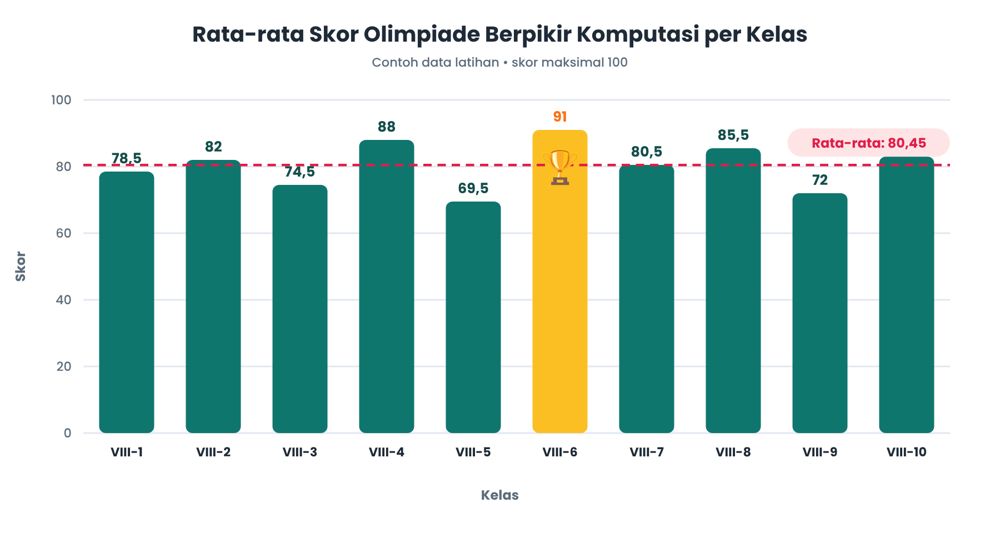
3Tiga aplikasi andalan
Tiga sahabat dengan kekuatan super berbeda. Kalau digabung, hasilnya mantap!
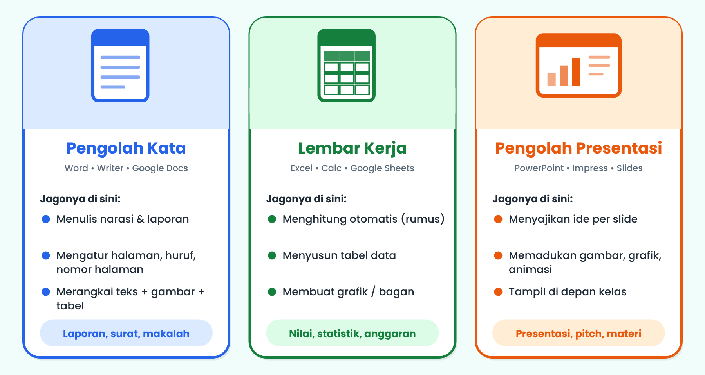
4Konten digital & multimedia
Multimedia menggabungkan teks, suara, gambar, animasi, atau video dalam satu penyajian (contoh: podcast video, film, tayangan slide beraudio).
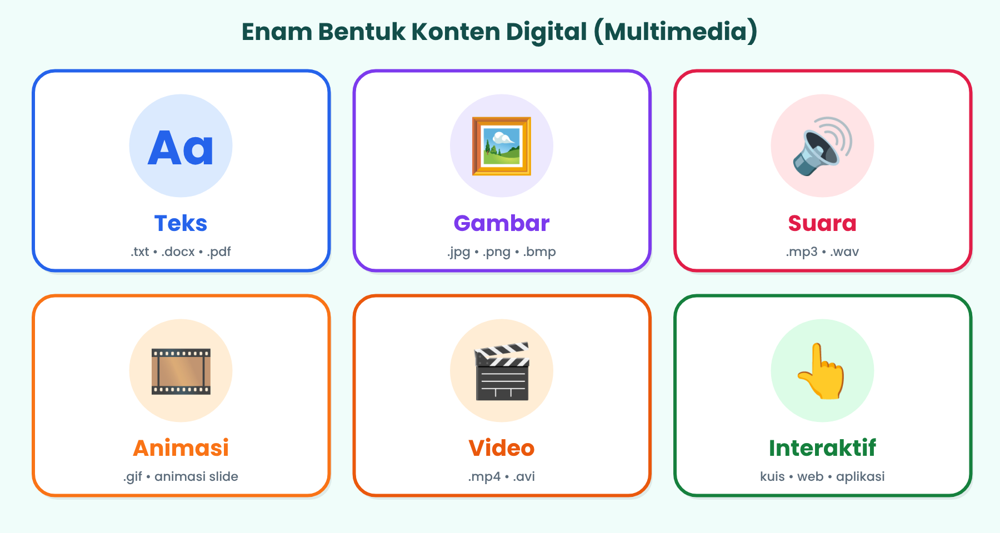
Setiap file punya “nama belakang” (ekstensi) yang menunjukkan jenisnya. Ganti format lewat Simpan Sebagai (Save As).
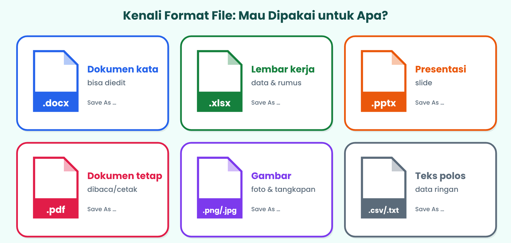
5Empat jurus memindahkan konten
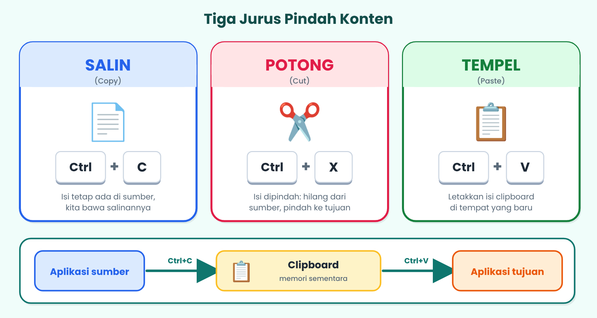
- Ctrl+C menyalin — aslinya tetap ada.
- Ctrl+X memotong — aslinya pindah/hilang.
- Ctrl+V menempel di tempat baru.
- Salah? Ctrl+Z membatalkan.
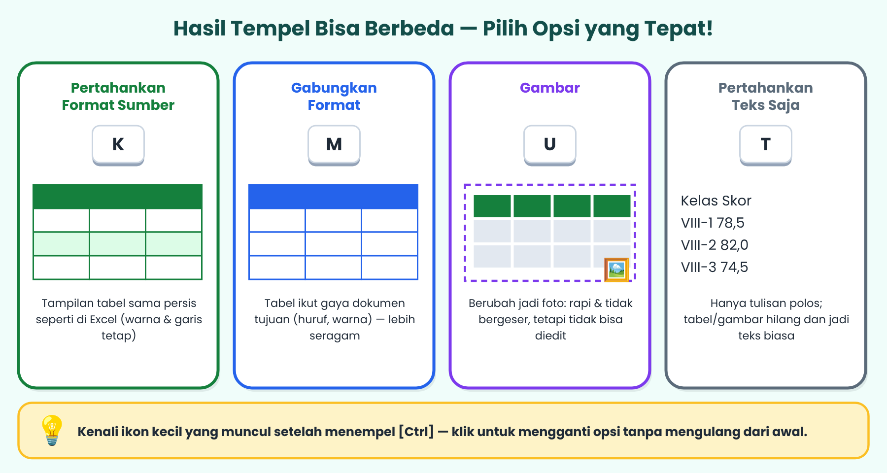
| Kalau ingin… | Pilih… |
|---|---|
| Tabel sama persis seperti di Excel | Pertahankan Format Sumber |
| Tabel mengikuti gaya dokumen | Gabungkan Format |
| Grafik tidak bergeser/berubah | Gambar |
| Hanya tulisan polos | Pertahankan Teks Saja |
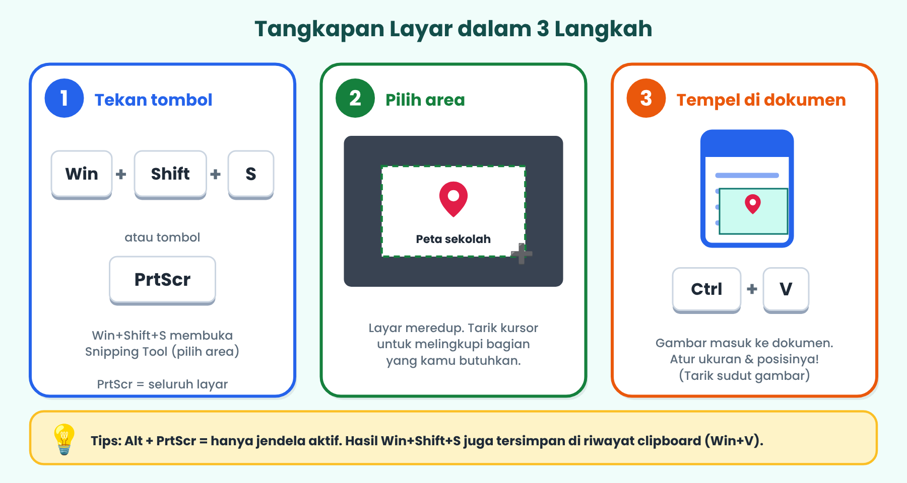
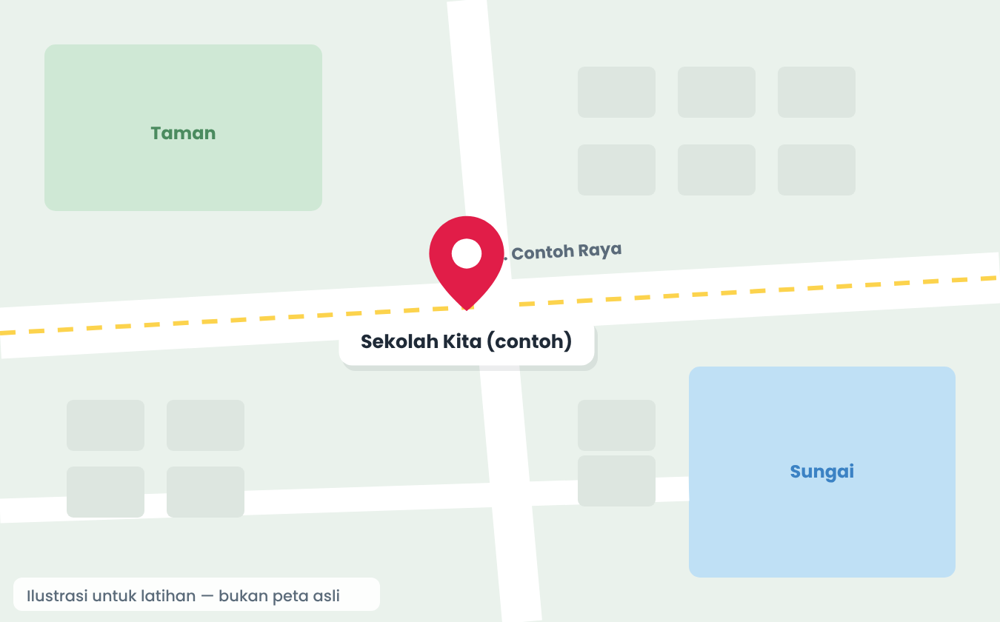
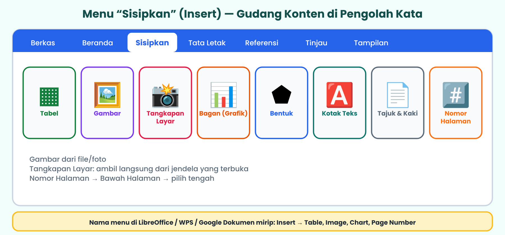
Nomor halaman: Sisipkan → Nomor Halaman → Bawah Halaman.
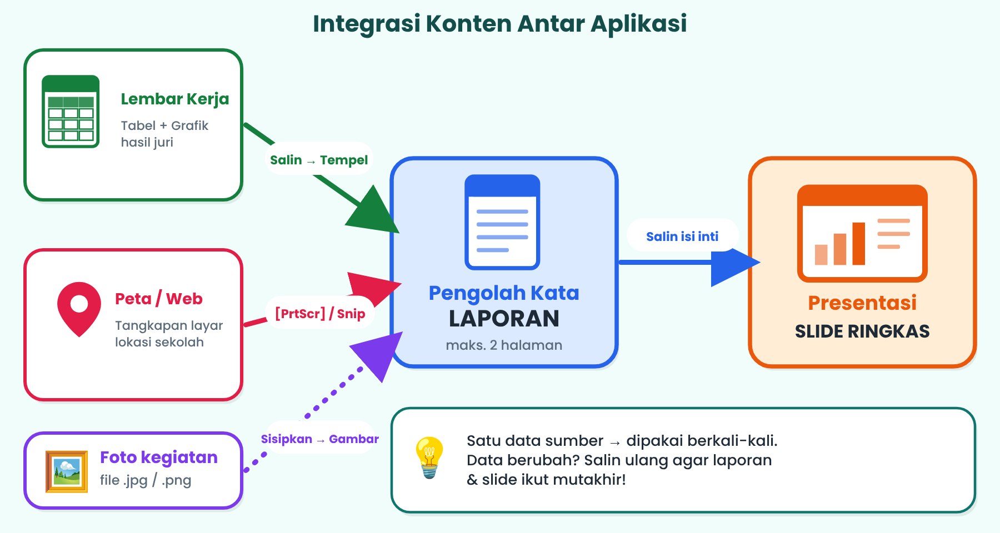
6Membuat laporan yang keren
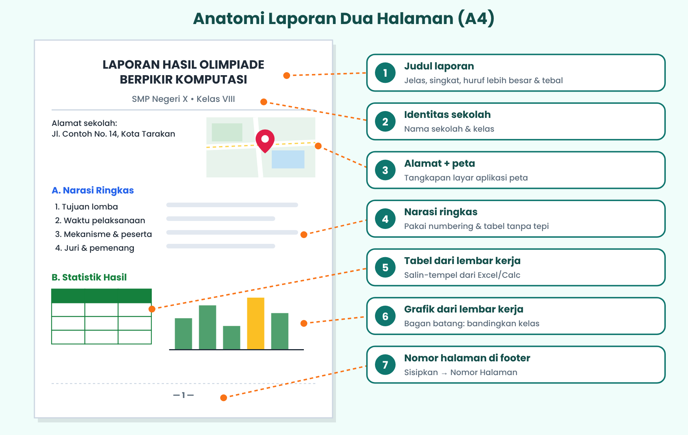
- Judul “Laporan Hasil Olimpiade Berpikir Komputasi”.
- Nama sekolah.
- Alamat + peta (tangkapan layar).
- Narasi ringkas: tujuan, waktu, mekanisme, peserta, juri, pemenang — pakai numbering atau tabel tanpa tepi.
- Statistik: tabel + grafik dari lembar kerja.
- Nomor halaman di footer; kertas A4.
Tabel & grafik dari lembar kerja
- Buka
data_olimpiade.xlsx(jangan ubah rumus). - Blok tabel → Ctrl+C → Word → Ctrl+V → pilih opsi tempel.
- Salin grafik → tempel sebagai Gambar.
- Tambah keterangan dan sumber data.
7Presentasi: singkat, padat, memikat
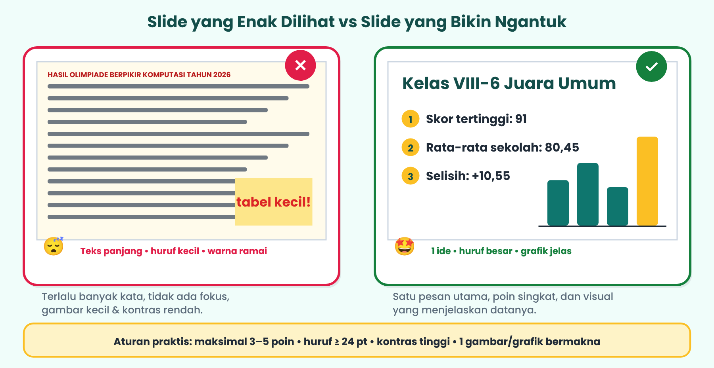
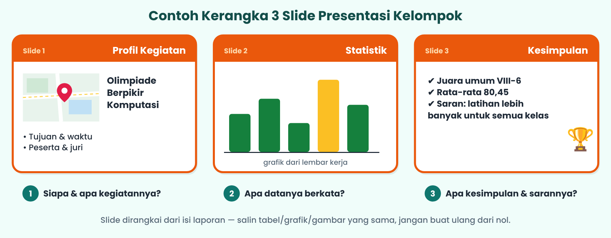
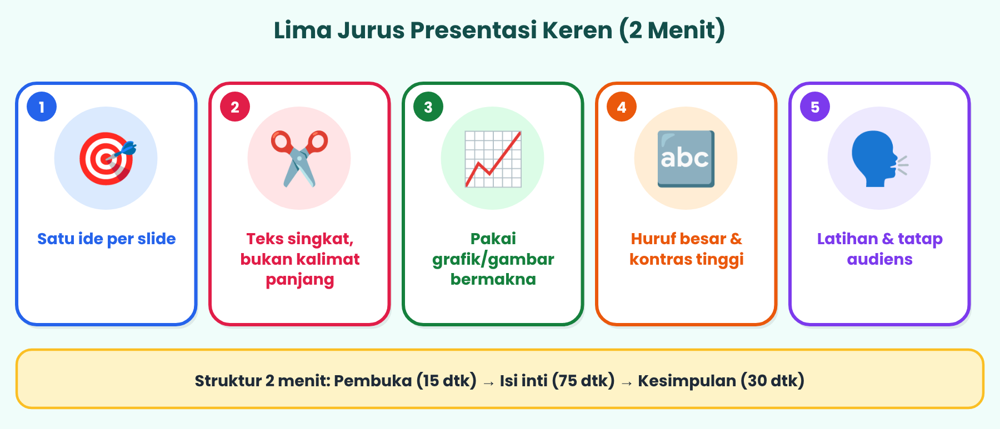
8Etika: cek dulu sebelum tempel
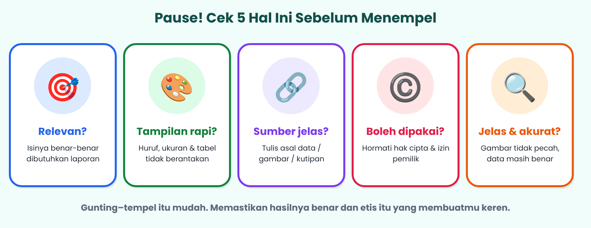
Foto dan tulisan orang lain ada pemiliknya. Cantumkan sumber, dan pakai Salin (bukan Potong) untuk data asli.
9Kerja tim: empat peran
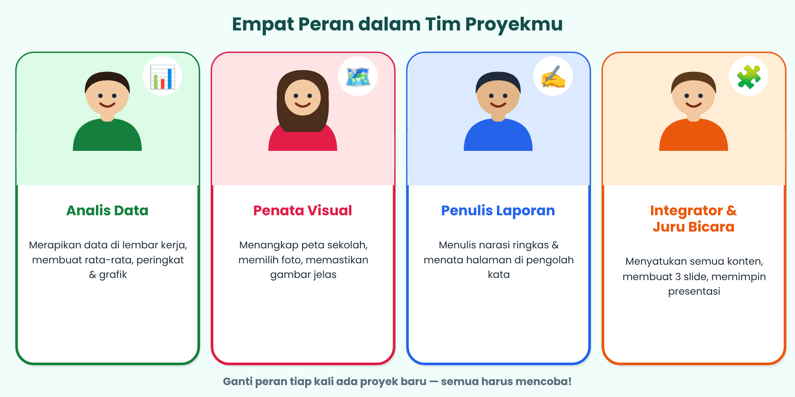
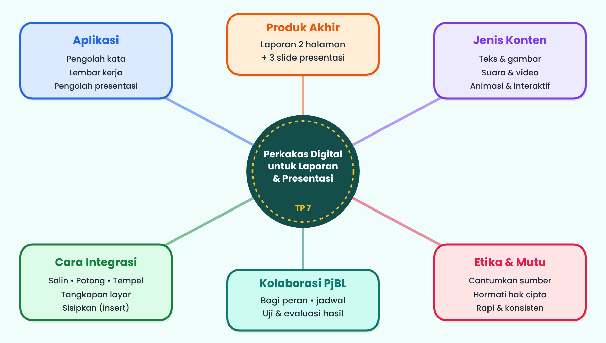
Istilah penting
| Istilah | Artinya |
|---|---|
| Integrasi konten | Menggabungkan konten dari banyak aplikasi menjadi satu |
| Clipboard | Memori sementara hasil salin/potong |
| Tangkapan layar | Gambar tampilan layar (screenshot) |
| Footer | Bagian bawah halaman, tempat nomor halaman |
| Ekstensi file | Nama belakang file: .docx, .xlsx, .pptx |